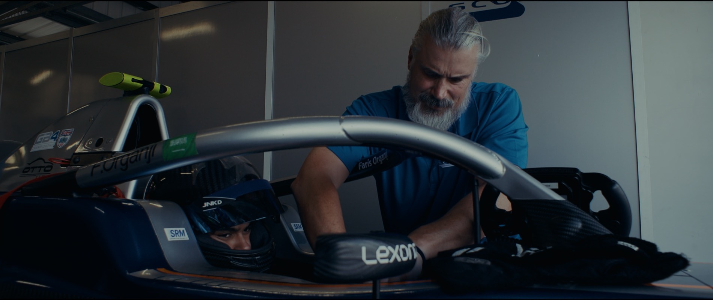
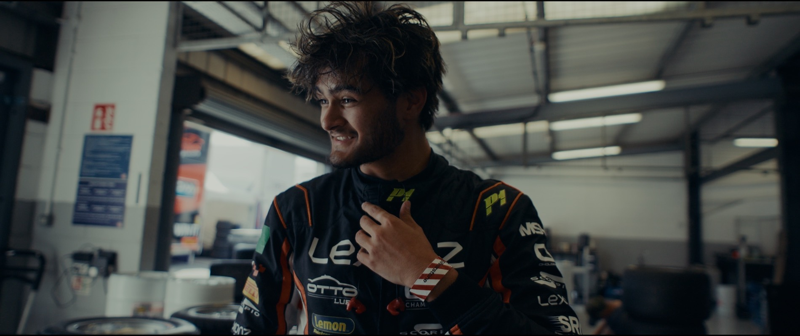

SEE WHAT OTHERS MISS
IDENTIFY
Assess talent, performance, character and opportunity with a clear view of what the next level requires.

Motorsport Investment & Representation
Managing and investing in talent, with a growing presence across motorsport. We turn potential into a professionally represented, long-term opportunity.
Discover LEXONZExplore the circuits behind the journey. Each stop will become a living story of people, preparation, images and film.
Select a circuit to enterThe role we play
We invest in motorsport talent and build the structure around it: representation, career strategy, performance, commercial partnerships and media.
We align investment, representation and performance support around the talent and its needs.
From race weekends and international circuits to partnerships and original media, our presence grows through real work in the sport.
Explore our services
How we create momentum
Every opportunity starts with evidence. We identify potential, structure the right investment and represent talent through the sporting, commercial and career decisions that follow.
Assess talent, performance, character and opportunity with a clear view of what the next level requires.
Connect sporting plans with the resources, technical preparation and partnerships needed to move forward.
Guide career choices, team relationships, contracts, partnerships and public presence with long-term intent.
Field notes
Our presence is built in real moments: preparation before the session, decisions in the garage, performance on track and the work that continues after the flag.

Focus before the track
A growing presence
Our work begins with talent and expands through teams, circuits, partners, media and new opportunities. Each move strengthens a connected motorsport portfolio with Saudi ambition at its core.
Explore our servicesStart a conversation
For talent, teams, investors and commercial partners: tell us where you are and where you intend to go. We will explore whether LEXONZ is the right partner for the opportunity.
POTENTIAL DESERVES DIRECTION.
MOVE FORWARD.